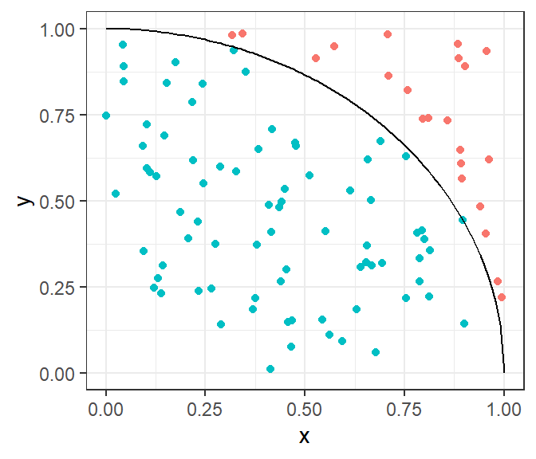
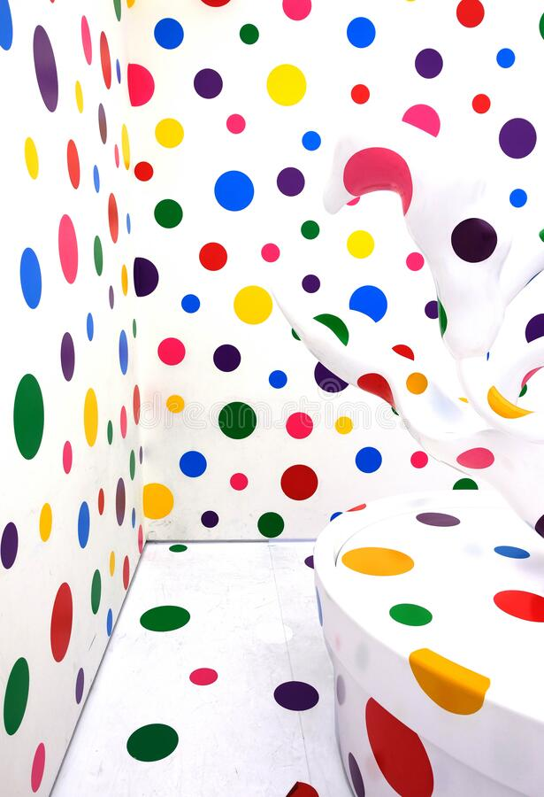

Lab 01 - Binomial distribution
Individual assignment
Due: February 13 at 23:59
- Please submit your lab using this link.
- If you have questions, please book a slot during Ofer’s office hours!
This lab is designed to sample from the binomial distribution. In a binomial distribution, an experiment consists of a certain number of trials, \(n\). Each of the \(n\) trials is considered either a “success” or “non-success”. You count the number of “successes”, and that is the result of the experiment!
For example, \(n=20\) students are taking an exam, and you count the number of students passing the exam. In a hospital, \(n=100\) babies were born, and you count the number of babies that were assigned with “female” at birth. You will need to assume that every trial (exam taken, or baby born), the probability of a “success” is the same, and that each trial is completely independent of the other trials.
Load packages in R
If you are using R, you would want to load the the tidyverse package by calling the function library(tidyverse).
I am \(\pi\)

This exercise is designed to sample from the binomial distribution in order to obtain a numerical approximation for the number \(\pi\). To do this, you generate points uniformly distributed on a square. The proportion of points that fall within a quarter of a circle that is circumscribed within the square approaches \(\frac{\pi}{4}\).
A famous artist took a a square piece of paper, and drew a quarter of a circle upon it, such that the edge of the square is the circle’s radius. She then decides to sprinkle small paint drops on the paper. All the paint drops inside the circle are of one colour and all the drops outside of the circle have a different colour. Other than that, the drops are positioned completely at random throughout the square.
# setting the seed makes sure that each time
# we run the script, we get the same results.
set.seed(123)
# The number of trials is n.trials
n.trials <- 100
point.x <- runif(n.trials, min=0, max=1)
point.y <- runif(n.trials, min=0, max=1)
# Now let us consider that a point that landed
# inside the circle is a "success", and a point
# outside of the circle is not. We want to
# after running n.trials=100 , we want to know how
# many successes we have - that is: how many points
# are inside the circle.
inside <- point.x^2 + point.y^2 < 1
y.circle <- function(x){sqrt(1-x^2)}
ggplot() +
geom_point(aes(point.x,point.y, color=inside)) +
geom_function(fun=y.circle) +
scale_x_continuous(limits=c(0,1)) +
theme_bw() +
theme(legend.position = 0) +
labs(x="x", y="y")
You can generate points sprinkled randomly in the square using the function runif(n, min, max) for both coordinates of every point. We then count how many points fall inside the circle - that would be the result of our experiment.
You now want to repeat this experiment thousands of times. For each experiment you calculate the number of points that fall within the circle. Your code might look like this:
# This function returns the number of points for one experiment
successes.in.one.experiment <- function(){
# Each experiment consists of numerous trials
# The number of trials in each experiment:
n.trials <- 100
# generating random numbers for x and y of each point
point.x <- runif(n.trials, min=0, max=1)
point.y <- runif(n.trials, min=0, max=1)
# Calculate the number of "successes"
# The number of successes is the number of
# dots inside the circle.
sum(point.x^2 + point.y^2 < 1)
}
# This is the number of experiments
# Each experiment counts the number of successes
n.experiments <- 1000
X <- replicate(n.experiments, successes.in.one.experiment())Now, you can create a histogram of the variable \(X\), which consists of a series of numbers, representing the number of “successes” in each of the experiments.


QUESTIONS:
Try to recreate the artist’s drawing. Remember that for a every point on the circle’s edge, the \(y\) coordinate can be established from the \(x\) by using the following equation \(y=\sqrt{1-x^2}\).
Now, create a histogram of the variable \(X\), which consists of a series of numbers, representing the number of “successes” in each of the experiments. To do this in R, you can use the
geom_histogramfunction ofggplot. If you need a refresher on how to use visualizations in R, try this playlist.Try to adjust the variables
n.trialsandn.experimentsin order to get a smoother histogram. Then address the following tasks:What does this histogram show? What kind of distribution is this? Try to explain how your code works.
Demonstrate that the average probability for success in each trial is approximately \(\pi/4\). Try to give a theoretical explanation for this.
Given that the probability for success in each trial is \(p=\pi/4\), you can calculate the binomial distribution’s theoretical mean of \(\mu=n\cdot p\) and its theoretical standard deviation of \(\sigma=\sqrt{n\cdot p\cdot(1-p)}\). Calculate the theoretical mean and standard deviation, and compare with the actual mean and standard deviation from your simulations…
Now try to superimpose a normal distribution with the theoretical mean and standard deviation on top of your histogram. It should fit nicely - just like the figure above.